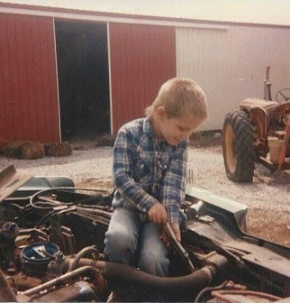
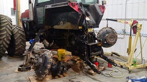

 This is the cleanest I have ever seen Doug while he is at the farm. I bet that didn't last long either.
This is the cleanest I have ever seen Doug while he is at the farm. I bet that didn't last long either.
I remember one of the first times helping my dad work on equipment at the farm. My dad and brothers couldn't reach to put a new fitting and gasket inside a sprayer tank. Dad had me crawl inside to get the fitting and gasket in the hole so they could thread the nut on it. After that I was helping dad all the time. I was the smallest so I could fit places dad and the other boys couldn't.
--Doug Schmidt
Doug Schmidt
The man... The myth... the legend...
Do you remember the theme song from the Dukes of Hazzard? You know the Good Ol' Boys by Waylon Jennings? Now take that song and put a modern twist on it like Lil Wyte did here and you have Doug Schmidt. A modern good ol' boy.
Doug's Life in a song...
This man is wise beyond his time. He is ready to help anyone in a heartbeat and not think twice about it. He grew up on a farm in rural Nebraska learning everything he could from his dad. I don't think there is a time that I came to Doug with a problem he hasn't been able to help me fix.
Most of the time you can find Doug somewhere in the country. He's either in the field working, doing something with the many different animals he has adopted, elbows deep in grease working on something or driving to pick up some new piece of equipment he just bought. When he has a little free time try looking in a tattoo shop for him.
***Here I will talk some more about Doug after I here from the family I contacted.***
Pictures are not in order yet or where I want them to be placed. I asked him for some and he told me to take em from facebook.